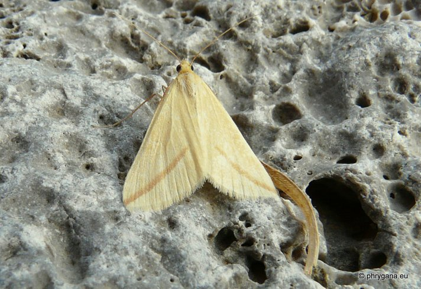

| PHRYGANA | Fauna | Flora | Galles | liste des espèces |
contact -
info - commentaires phrygana1 (at) gmail.com |
| Particularités crétoises | nouveautés | Mines | ressources naturelles |
| Rhodometra sacraria (Linnaeus 1767) |
| 118 | Fauna | GEOMETRIDAE | Sterrhinae | Rhodometra Meyrick 1892 |
Rhodometra sacraria Melambes (Agios Giorgos) 18 avril 2010 |
| la Phalène sacrée -- The Vestal -- Roodstreepspanner | |
| Envergure: 24 - 26 mm pour la première génération, plus petite pour les suivantes (16 - 26). | |
| Couleur de fonds jaune sable à jaune. Petits points noirs discaux peu marqués. Une bande postmédiane allant jusqu'à l'apex de largeur variable, de couleur brune, rouge ou parfois noire. Ailes postérieures blanches. | |
| Chenille oligophage: Polygonaceae (Rumex sp., Polygonum aviculare), Anacardiaceae, Amaranthaceae | |
| Chrysalide dans un cocon dans la litière | |
| Espèce plurivoltine | |
| Période de vol: mars avril mai juin juillet août septembre octobre | |
| Statut en Crète: indigène | |
| Biotopes en Crète: phrygana, garrigue, steppes, principalemement près des côtes. Altitudes: 0 - 1000 m | |
| Distribution: Europe méridionale, Afrique, Moyen-Orient, Asie centrale, Inde, Chine du sud. | |
| Note: l'adulte vole dès le crépuscule, vient à la lumière. Est facilement dérangé le jour. | |
| Forte tendance migratrice | |
|
Rhodometra sacraria Melambes (Agios Giorgos) 18 avril 2010 |
|
Rhodometra sacraria Melambes (Agios Giorgos) 18 avril 2010 |
|
Rhodometra sacraria Melambes (Agios Giorgos) 04 octobre 2010 |
|
Rhodometra sacraria Melambes (Agios Giorgos) 18 septembre 2009 |
|
 Rhodometra sacraria Melambes (Agios Giorgos) 13 août 2012 |
| 25 août 2012 |
| © paul fontaine -- © Phrygana.eu 2007 -- 2013 |